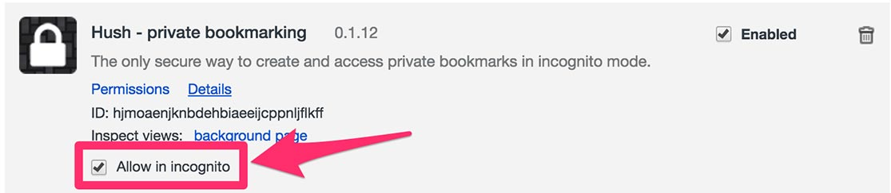
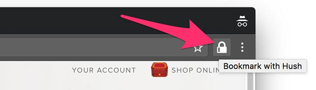
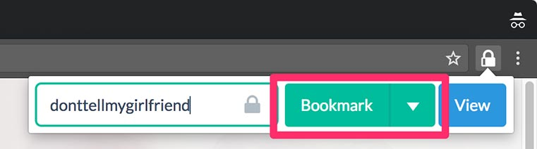
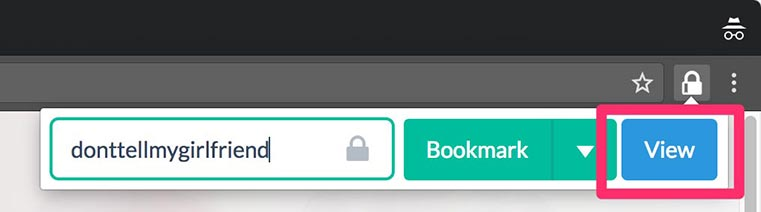
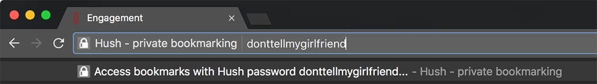
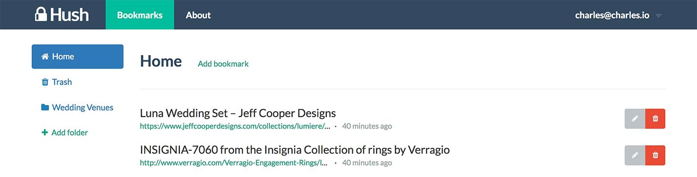
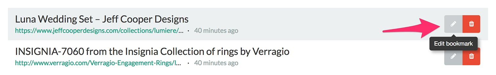
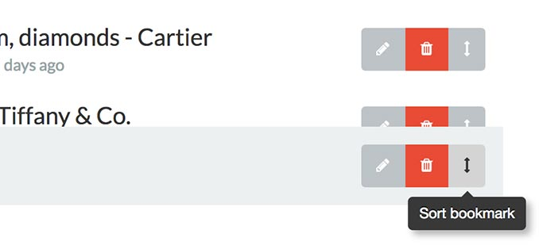
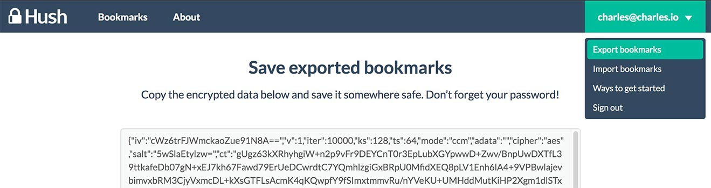
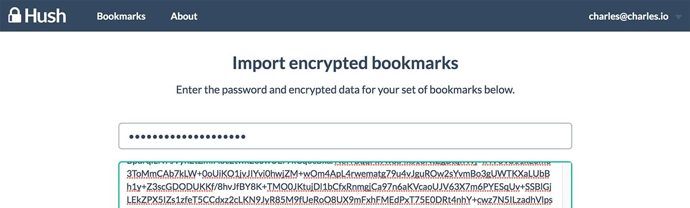

Here’s some information to get you started.
For your security, Hush only runs in incognito mode. You need to allow Hush to do so first!
Open your Chrome Extensions page.
For the Hush extension, click the “Allow in incognito” checkbox.

That's it! You're ready to use Hush!
Each set of bookmarks in Hush is secured by a password of your choosing. We like to group our bookmarks in several sets, each with their own password.
Ensure that your password isn’t easily guessable, but also make sure you remember it — if you forget your password, the set of bookmarks corresponding to it can never be recovered!
While you’re on the page you want to bookmark, click the Hush icon in the top right of the address bar.

This will display the Hush popup, which will prompt you for your password. Enter a password you want to use to protect this set of bookmarks, then click the Bookmark button.

Congratulations! You’ve saved a bookmark.
Click the Hush icon in the top right of the nav bar. Once you’ve entered the password associated with the set of bookmarks you want to access, click the View All button.

Your secure bookmarks panel will open up in a new tab.
In the address bar, type hush, followed by a space, and then the password associated with the set of bookmarks you wish to access. Then, press Enter.

Your secure bookmarks panel will open up in a new tab.
From your bookmarks page, you can access all of your saved links easily.

Clicking the Edit button to the right of a bookmark allows you to edit the URL or description for a bookmark.

Clicking the Delete button to the right of a bookmark removes it altogether.
Dragging the Sort button to the right of a bookmark lets you move them up and down.

You can add bookmarks from this panel by clicking the Add bookmark button, then filling in the appropriate spaces. Once you’re done, don’t forget to save your changes!
If you’re a Hush Pro user, you can import bookmarks from Chrome by clicking the Import browser bookmarks link on the top of the page.

Open the special menu by clicking on the menu on the top right of the page.
You can export an encrypted version of your bookmarks simply by copy-pasting the text in the Export dropdown. Don’t forget the password you used to save them, or else you won’t be able to decrypt them!

You can import encrypted bookmarks by entering their password and text in the Import dropdown.

Hush Pro is a premium version of Hush that provides an online secure backup service for all of your bookmarks, plus the ability for you to access your bookmarks from any device at hushbookmarks.com.
You also get advanced features such as creating folders for your bookmarks and importing existing bookmarks from Chrome.
Hush Pro costs $1 a month or $9 a year. Sign up for Hush Pro here!
If you have any further questions, suggestions, or comments, feel free to email us at teameuler@gmail.com!